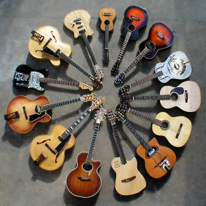
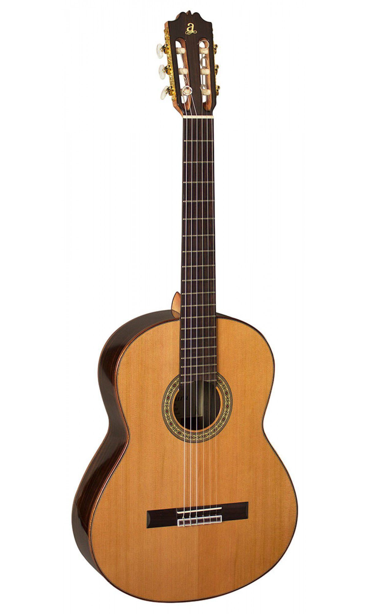
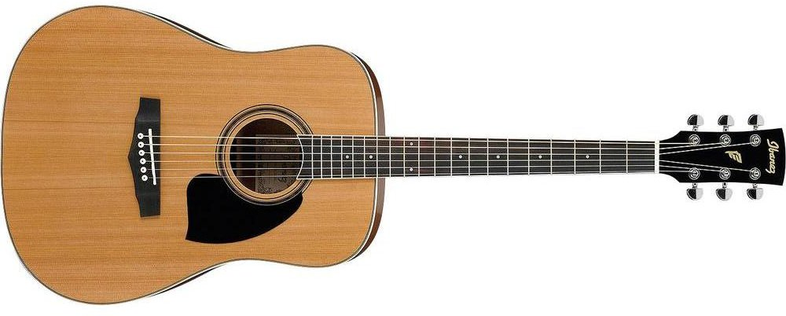
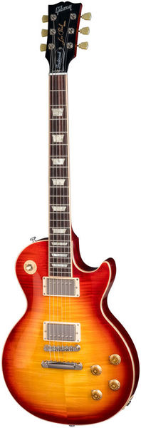

Despre Chitara
De ce sa inveti sa canti la chitara?
- indeparteaza stresul, anxietatea, depresia
- ajuta la schimbarea mai usoara a modelelor de gandire invechite cu altele bazate pe deductii si ratiune
- amplifica puterea de invatare prin stimularea naturala a activitatii cerebrale (multitasking, grad marit de observare al detaliilor, abilitate de a repara mai rapid diferite erori, identificare rapida de solutii in diverse probleme intalnite, inteligenta crescuta)
- capacitate crescuta de socializare, momente distractive, prietenii de durata
- fiind usor portabila, chitara asigura momente frumoase in orice loc si orice situatie, impreuna cu persoane care impartesesc aceeasi pasiune cu a ta.
Cu o vechime de peste 3300 de ani, chitara a devenit cel mai popular si indragit instrument muzical. Ca şi configurație, are corpul făcut din lemn, cu 6 coarde clasice (opusul coardelor metalice pentru chitară acustică şi chitară electrică). Nu se cunoaste cu siguranţă locul de unde provine acest instrument. “Chifara” este denumirea utilizată de grecii antici pentru instrumentul cu care aceştia acompaniau cântecele vocale. La chinezi acest instrument face parte din cele patru simboluri ale educaţiei, printre care sunt cartea, pensula şi şahul.
Chitara clasică a fost precursoarea chitarei acustice şi a chitarei electrice, deseori acestea fiind confundate. De fapt, chitara acustică și chitara electrică prezintă o evoluție a instrumentului clasic, utilizate în stiluri musicale precum: jazz, pop, rock, heavy-metal, muzică alternativă etc.. Familia chitarei este îmbogatăţită de chitara flamenco, care provine de la chitara clasică, dar se diferenţiază prin construcţie, material şi sunet.
Nu intram in prea multe detalii de ordin istoric, fiindca nu fac obiectul site-ului nostru. Vrem doar sa trasam o serie de repere cu ajutorul carora veti intelege repede care este diferenta dintre modele. Insistam pe anumite aspecte ce vor fi folositoare atunci cand veti dori sa cumparati acest instrument.
Tipuri de chitare
Tehnic vorbind, exista o varietate de chitare, insa exista 2 tipuri majore:
Acustice si electrice
Tipul de chitara pe care il alegi va influenta mult genul de muzica la care vrei sa devii bun, dar daca vrei sa canti in ambele stiluri, atunci este bine sa incepi cu chitara acustica cu corzi de metal. Acesta iti va face degetele mai puternice pentru a forma acordurile. Chitara eletrica are nevoie de mai putina forta pentru a apasa corzile, deci daca vrei sa canti la ambele chitari, incepe cu cea acustica.
Chitara acustica
- 
- Cu corzi de nylon, numita si chitara clasica
- Cu corzi de metal, numita si chitara acustica western
Daca vrei sa inveti chitara clasica atunci vei afla ca marea parte din muzica clasica este compusa pentru chitara cu corzi de nylon. Atat flamenco cat si celelalte genuri ale muzicii spaniole sunt cantate la chitara clasica.
Cea mai mare diferenta dintre acest tip de chitara si chitara acustica cu corzi de metal este gatul acesteia, care este mai lat si faptul ca se canta doar cu degetele, ciupit, fara pana.
Acest tip de chitara permite folosirea ei pentru mai multe genuri si este o alegere buna pentru ati incepe calatoria in muzica. Datorita faptului ca volumul sunetului de iesire este mai mare spre deosebire de cea clasica, foarte multi oameni o prefera.
Aici ar mai fi de mentionat si chitara electro-acustica care se afla undeva intre chitara acustica si chitara electrica. Diferenta este ca cea electro-acustica poate fi legata la un amplificator si astfel se poate canta la un volum mai ridicat. Este folosita in special la cantatul pe scena unde sunetul trebuie amplificat.
Chitara electrica
Majoritatea chitaristilor incepatori abia astepta sa puna mana pe o chitara electrica si intr-adevar este o experienta frumoasa.
- Doua deosebiri dintre chitara electrica si cea acustica sunt:
- Are un corp mai greu deoarece corpul lor este facut din lemn solid, plin la interior.
- Trebuie sa fie amplificata electronic pentru a fi auzita. Aceasta trebuie legata printr-un cablu la amplificator.